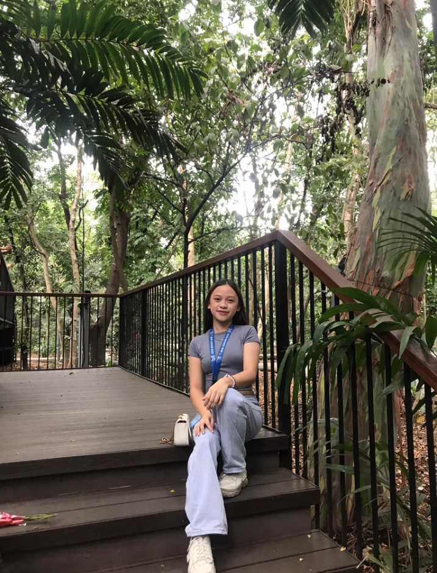
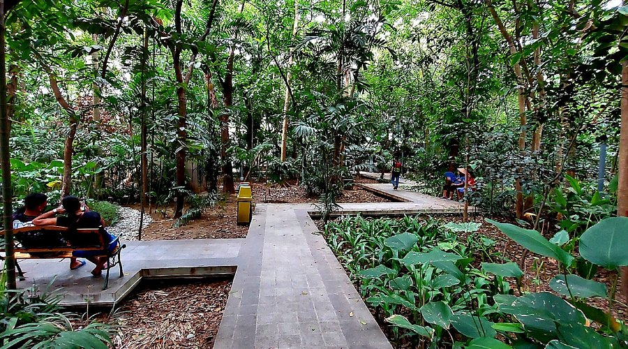
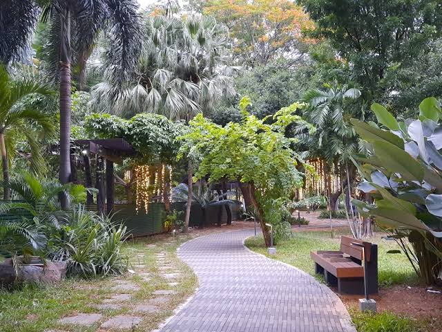

This is your guide to discovering peaceful and relaxing places in the heart of the city. From hidden parks and quiet gardens to spots and cozy places, this guide will help you find the perfect escape from Manila's busy streets. Whether you want to unwind, enjoy nature, or simply take a break, Find Calm in Manila connects you with destinations that offer comfort, serenity, and peace.
Akisha Belamide
"Escape the Noise, Embrace the Peace."
As a person who enjoys calm and peaceful places with beautiful view, I find comfort in being surrounded by nature. Quiet environments help me relax, clear my mind, and take a break from the stress of daily life. Parks like Arroceros Forest Park, Paco Park, and Washington SyCip Park offer a peaceful atmosphere and beautiful views that make me feel refreshed and at ease.

ARROCEROS FOREST PARK
📍 A Antonio Villegas St, Ermita, Manila, 1000 Metro Manila
Known as Manila's "last lung," Arroceros Forest Park is filled with trees, walking paths, and fresh air. It's a peaceful escape from the busy streets and traffic of the city.
View details

PACO PARK
📍 HXJQ+99M, Belen, Paco, Manila, Metro Manila
Paco Park offers a quiet and relaxing atmosphere surrounded by historic walls and beautiful gardens. It's an ideal place for reflection, peaceful walks, and enjoying Manila's history.

WASHINGTON SYCIP PARK
📍 Legazpi St, Legaspi Village, Makati City, 1229 Metro Manila
Located in Makati, this park features shaded pathways, gazebos, and lush greenery. Its calm environment makes it perfect for reading, relaxing, or taking a break from city life.
